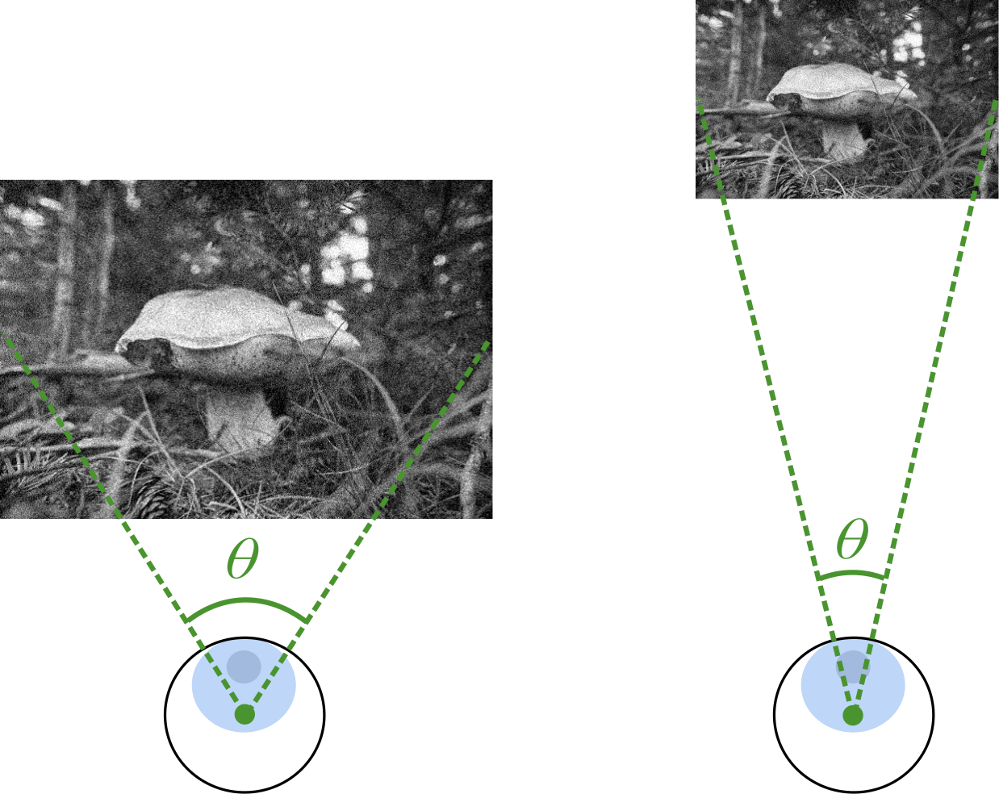
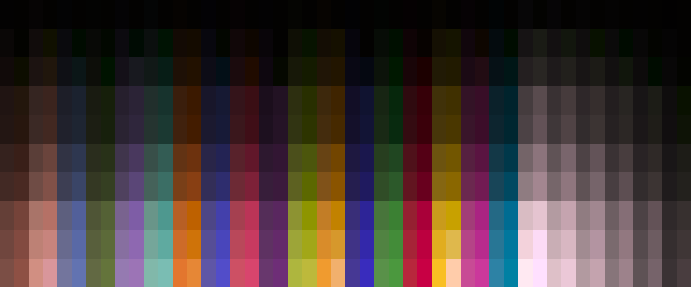
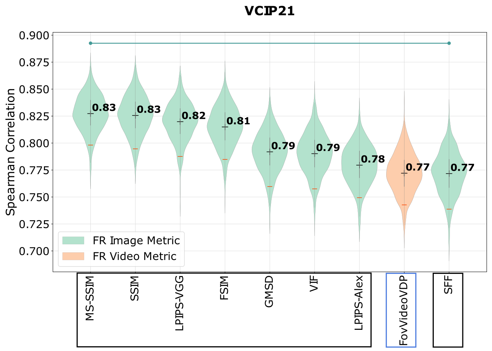
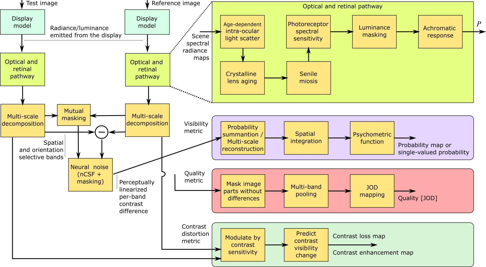
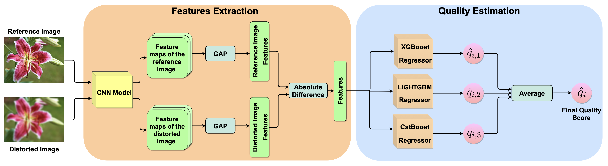

I am Dounia Hammou, a second-year PhD student in the Graphics and Interaction (Rainbow) group at the University of
Cambridge under the supervision of Dr Rafał Mantiuk. My research is primarily centered on human vision and perception
and its application to video quality assessment metrics and visual difference predictors.
My research revolves around applying both human vision and machine learning to develop video quality assessment
algorithms that account for the display and viewing conditions of observers, with the aim of optimizing video delivery
of both SDR and HDR content for all users in any viewing environment.
Prior to my PhD, I studied at the National Institute of Telecommunication and ICT, where I received my engineering
degree in Telecommunications and Digital Technologies. During my undergraduate studies, I worked under the supervision
of Dr Sid Ahmed Fezza and Dr Hamidouche Wassim on image quality assessment algorithms.

The effect of viewing distance and display peak luminance -- HDR AV1 video streaming quality dataset
Dounia Hammou, Lukáš Krasula, Christos G. Bampis, Zhi Li, Rafał K. Mantiuk
Accepted at QoMEX 2024
In this work, we collected a new video quality dataset, HDR-VDC, which captures the quality degradation of HDR
content due to AV1 coding artifacts and the resolution reduction. The quality drop was measured at two viewing
distances, corresponding to 60 and 120 pixels per visual degree, and two display peak luminance levels, 100
and 800 nits. Our results indicate that the effect of both viewing distance and display brightness is significant,
and it reduces the visibility of coding and upsampling artifacts on darker displays or those seen from a further
distance.

Image quality assessment across viewing distances: A comparison study of CSF-based and rescaling-based metrics
Dounia Hammou, Lukáš Krasula, Christos G. Bampis, Zhi Li, Rafał K. Mantiuk
HVEI (EI) 2024 [conference]
Assessing the quality of images often requires accounting for the viewing conditions. Metrics that account for
these conditions typically rely on contrast sensitivity functions (CSFs). However, it is also possible to
rescale the input images to account for the change in the viewing distance. In a recent study comparing these
two types of metrics, we did not observe any statistical difference between the metrics. Hence, in this paper,
we use Fourier analysis to study the similarities and differences between the mechanisms of CSF-based and
rescaling-based metrics.

Color calibration methods for OLED displays
Maliha Ashraf, Alejandro Sztrajman, Dounia Hammou, Rafał K. Mantiuk
COLOR (EI) 2024 [conference]
Accurate color reproduction on a display requires an inverse display model, mapping colorimetric values (e.g. CIE XYZ)
into RGB values driving the display. To create such a model, we collected a large dataset of display color measurements
for a high refresh-rate 4-primary OLED display. We tested the performances of different regression methods: polynomial
regression, look-up tables, multi-layer perceptrons, and others. We found that the performances of several variations
of 4th-degree polynomial models were comparable to the look-up table and machine-learning-based models while being less
resource-intensive.
Forward and inverse colour calibration models for OLED displays
Maliha Ashraf, Dounia Hammou, Rafał K. Mantiuk
CIC 2023 [poster]
In this study, we compare different methods of color calibrating OLED 4-primary displays: three sub-gamut, PLCC-based compensation,
color mixing, polynomial regression, and RGBW gamut. We found that the performance of the models depended on the display
characteristics, and the models that performed better in terms of forward model error were not necessarily better for inverse model
performance.

Comparison of metrics for predicting image and video quality at varying viewing distances
Dounia Hammou, Lukáš Krasula, Christos G. Bampis, Zhi Li, Rafał K. Mantiuk
MMSP 2023 [conference]
Viewing distance has arguably a significant impact on perceived image quality; however, only a few image and video quality metrics
account for the effect of viewing distance. Those that do typically rely on contrast sensitivity functions (CSFs).
Other metrics can be potentially adapted to different viewing distances by rescaling input images. In this
paper, we investigate the performance of such adapted metrics together with those that natively account for viewing distance. The
results for three testing datasets indicate that there is no evidence that the metrics based on the CSF outperform those that rely
on rescaled images.

HDR-VDP-3: A multi-metric for predicting image differences, quality and contrast distortions in high dynamic range and standard content
Rafał K. Mantiuk, Dounia Hammou, Param Hanji
High-Dynamic-Range Visual-Difference-Predictor version 3, or HDR-VDP-3, is a visual metric that can fulfill several tasks, such
as full-reference image/video quality assessment, prediction of visual differences between a pair of images, or prediction of
contrast distortions. In this paper, we present a high-level overview of the metric, and describe how the metric was adapted for
the HDR Video Quality Measurement Grand Challenge 2023.

EGB: Image Quality Assessment based on Ensemble of Gradient Boosting
Dounia Hammou, Sid Ahmed Fezza, Wassim Hamidouche
CVPR 2021 [workshop]
In this paper, we propose an ensemble of gradient boosting (EGB) metric based on selected features similarity and ensemble learning.
The regression network consists of three gradient-boosting regression models that are combined to derive the final quality score.
Experiments were performed on the perceptual image processing algorithms (PIPAL) dataset, which has been used in the NTIRE 2021
perceptual image quality assessment challenge.
{kind=link}
{kind=link}
{kind=link}
{kind=link}
{kind=link}
{kind=link}